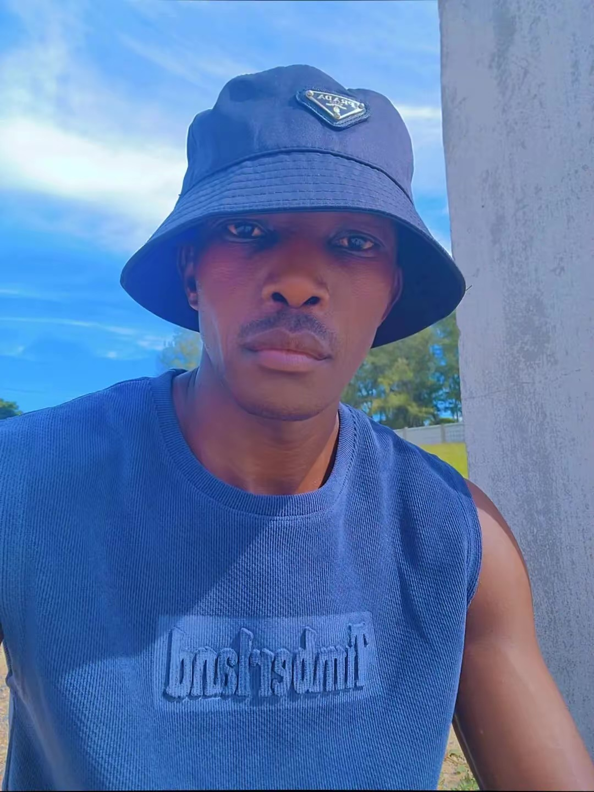

Mulembe Voice - Isukuti • Omutibo • Ingokho

Mlembe! Welcome to the first Luhya global radio from Busia to the World. We play Luhya culture, Isukuti, Omutibo, Bullfighting news, and connect Waluhya worldwide!
Subscribe:
▶️ YouTube: @thomask473
🎵 TikTok: @userthomask
📘 Facebook: WALUHYA 2 THE WORLD